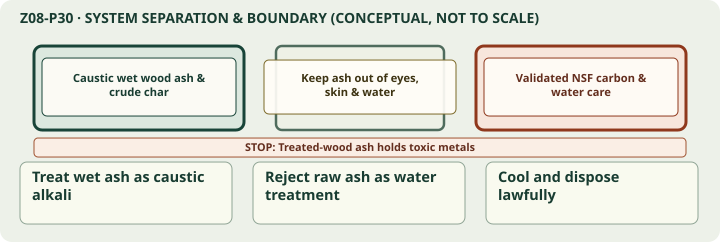

Z08-P30 · Rocks, minerals and materials · New manuscript
Wood Ash, Charcoal and Mineral Grits: Non-Food Safety Boundaries
Recognize the caustic alkali properties of wet wood ash and the non-sterilizing limits of crude campfire charcoal.
When it applies · Managing campfire ash residues, hand hygiene, and water-clarification misconceptions.
Equipment · Gloves, metal ash container if lawful, clean rinse water.

Actions
- Recognize that wood ash combined with water forms alkaline potassium-hydroxide lye capable of irritating skin and severely injuring eyes.[R14, C09]
- Separate crude campfire charcoal from engineered NSF-certified activated carbon; homemade charcoal cannot reliably remove chemical toxins or pathogens from water.[R12, W17]
- Avoid mixing unknown burned trash or treated-wood ash with soil or water because treated lumber leaves copper, chromium, or arsenic residues.[R12, R14]
Failure recognition · Scrubbing skin aggressively with wet ash or assuming campfire charcoal purifies polluted water causes alkali burns and waterborne illness.[R12, R14, W17]
Verify · Wet ash is kept away from eyes and skin, treated-wood ash is avoided, and water treatment relies on validated methods.[R14, W17]
Stop or change course · Stop contact immediately and flush with copious clean water if wet ash enters eyes; seek medical care for persistent burning.[R14, M18]
Evidence and editorial notes
- C09 · CPSC · CO Alarms (current web edition)
- Section: Installing and maintaining CO alarms · Conditions: U.S. household CO prevention
Support: Install CO alarms on every level and outside sleeping areas. Follow placement and maintenance instructions.
Limitations: Alarms alert to buildup after release begins; they never make indoor fuel-burning appliances safe. · Conflicting evidence: None; complements C05 and C06.
Editorial note: Paired with exit-plan checks in household and shelter cards. · Specialist reviewer: Carbon monoxide safety
Primary source · checked 2026-11-24 - M18 · National Capital Poison Center · First Aid for Poisonings (Current web edition)
- Section: In the eye: immediate irrigation; after irrigation · Conditions: Liquid chemical splash in the eye; exclude embedded or penetrating injury
Support: Begin immediate room-temperature water irrigation for at least 15–20 minutes and obtain poison-center direction.
Limitations: Severe or persistent symptoms need urgent evaluation. A penetrating injury follows a separate no-pressure emergency care branch; consult ocular trauma guidance. · Conflicting evidence: See A02 claim audit for boundaries.
Editorial note: Core eye-trauma decision boundary in Z10. · Specialist reviewer: Ophthalmology and emergency medicine
Primary source · checked 2026-11-25 - R12 · U.S. EPA · Protect Your Family from Lead in Soil and Dust (2025)
- Section: Soil contamination and urban/industrial lead hazards · Conditions: Soils near historic structures, roadways, mines, or industrial sites
Support: Soils and clays near older painted structures, smelters, tailings, or roadways may harbor lead or industrial contaminants.
Limitations: Visual texture or color cannot detect lead, arsenic, or chemical contaminants; do not use unverified soil/clay for cookware or food contact. · Conflicting evidence: None noted.
Editorial note: Separates clay plasticity checks from chemical safety. · Specialist reviewer: Environmental health and soil scientist
Primary source · checked 2026-11-25 - R14 · USGS · National Minerals Information Center and Mineral Commodities (Current web edition)
- Section: Metallic ores, sulfides, and heavy-metal mineral toxicity · Conditions: Unidentified metallic-luster minerals, tailings, or bright oxidized crusts
Support: Sulfide ores and metallic minerals can contain lead, arsenic, mercury, or copper compounds hazardous via dust or hand-to-mouth transfer.
Limitations: Do not taste, lick, burn, or process unidentified metallic or brightly crusted minerals; wash hands after handling. · Conflicting evidence: None noted.
Editorial note: Blocks hazardous mineral extraction/handling. · Specialist reviewer: Geochemist and toxicologist
Primary source · checked 2026-11-25 - W17 · Minnesota PCA · Blue-Green Algae and Harmful Algal Blooms (current web edition)
- Section: Blue-green algae and harmful algal blooms · Conditions: Minnesota lakes and ponds during warm summer and early autumn
Support: Blue-green algae blooms can form quickly along downwind shorelines; keep people and animals out of suspect water and use alternative drinking supplies.
Limitations: Local bloom distribution shifts rapidly with wind and wave action. · Conflicting evidence: None; reinforces regional Upper Midwest applicability.
Editorial note: Links downwind shoreline accumulation to site-selection and water-source rejection. · Specialist reviewer: Regional water quality and public health
Primary source · checked 2026-11-24
Source lineage · New manuscript (Z08 P16 material hazards) · Classification · New manuscript.